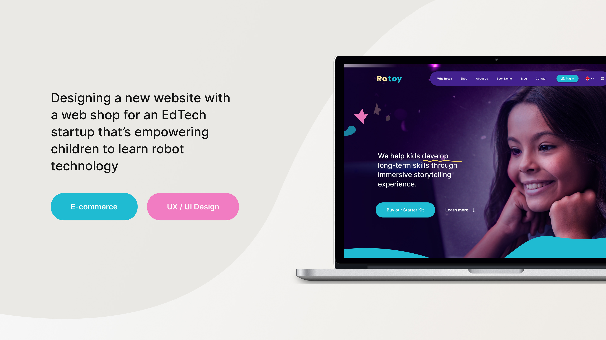
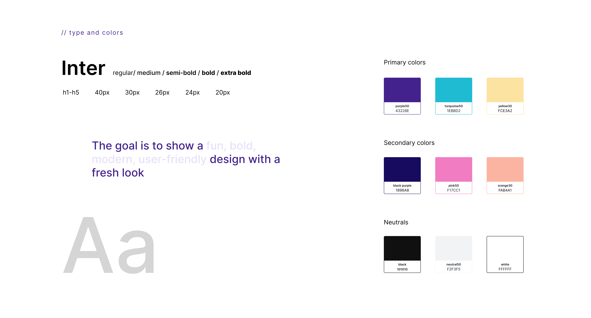
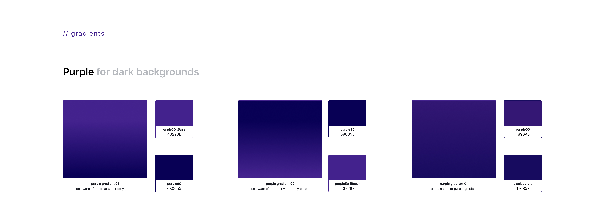
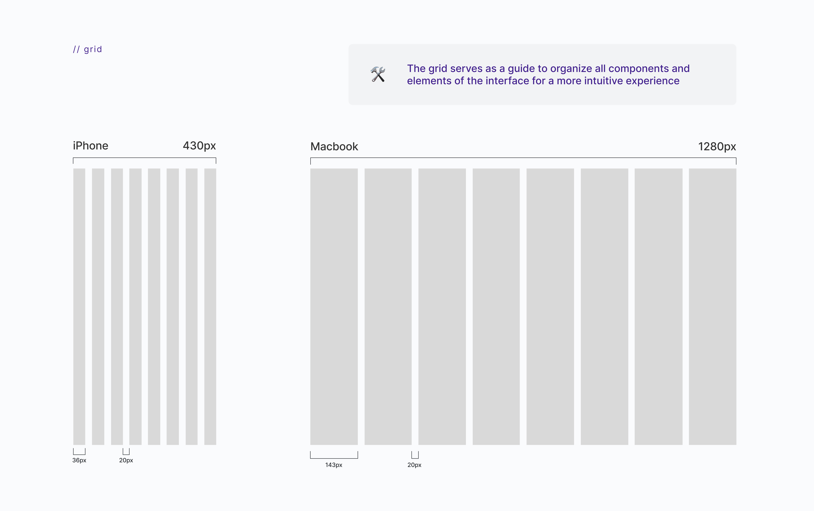
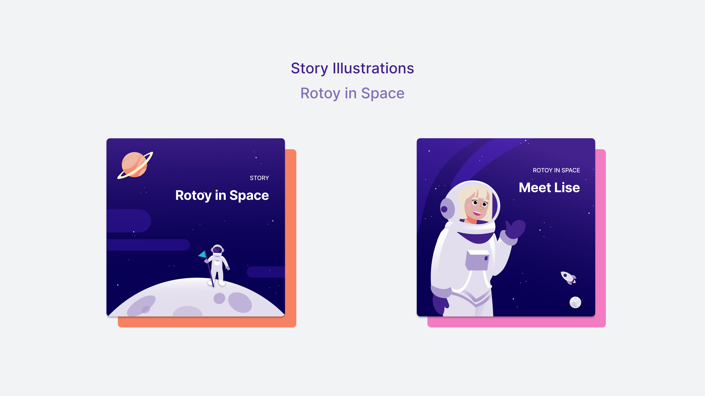
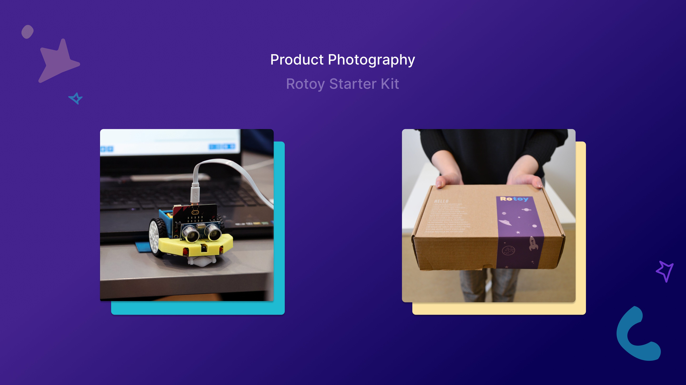

My role
🎯 Lead End-to-end Product Execution
Own the design process from concept to launch.
👨💼 Champion the User
Designing user centric features and user journey by implementing data from user test, user interviews and surveys.
✍️ Collaborate with Marketing and Sales on Content
Work together with marketing and sales on the content of the website and webshop, on SEO and content strategy, and on governance of the content.
✅ Enforce Quality Standards
Implement design reviews, usability checks, and QA testing to ensure consistency and a smooth user experience.
🚀 Craft Scalable UI and Collaborate with Developers
Create clear, consistent interfaces using Figma and maintain shared libraries and design systems. Collaborate with developers to implement the design and ensure the code is clean and maintainable.












Rotoy ApS needed a cohesive digital presence that explains their EdTech offering and supports direct purchase through a webshop. The work focused on brand clarity, responsive layouts, and a checkout path that feels trustworthy for families and schools.
Outcome and Results
The website had to introduce the product quickly, answer common questions before checkout, and keep navigation simple on mobile. Product pages, cart, and account flows were designed to reduce friction while preserving Rotoy’s playful, educational tone. The new website received a positive reception and we noticed an increase in engagement:
- 2x more people buying through the webshop as customers have more trust in the website than before due to language localization, information and images of founders and information about company (for example address and CVR).
- More engagement through the forms on the 'Demo page' and 'Contact page'.
- By using Hotjar to track the website and webshop performance, we were able to see that people spend on average 2 minutes more on the website than before.
- We have 30% more trafic on the website than before on the website.
- Through the newly implemented 'Blog page' we receive more trafic from people who find the blog posts on Google.
- By implementing a proper webshop flow, we can see in the purchase funnel how many people are interested in the product and where do users drop off.